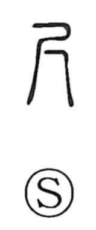

尺

Uncategorized
Kun: sashi | On: shaku, seki
shaku (foot) ・ ruler ・ measuring rod ・ small ・ few
Explanation
This character began as a pictograph of a hand held palm-down, with the thumb and middle finger stretched to their full span: the upper stroke suggests the wrist, while the forked 八 below renders the two outstretched digits. In traditional measures, a sun is the width of one finger, and ten sun make a shaku. From this, the graph names the shaku (about 0.303 m), and by extension a measuring rod or anything of shaku length; because it depicts only a modest span, it can also suggest “small” or “few.” In classical Japanese, this span is called ata, as in Yata no Kagami, though it is a distinct measure, and tsuka (束) denotes the breadth of four fingers.